منصة واحة التقنية
منصة تفاعلية لتعليم تقنية المعلومات للصفوف (1–4) وفق منهج وزارة التعليم – سلطنة عُمان
بوابات الصفوف
عن المنصة
تعلّم تقنية المعلومات بالممارسة
واحة التقنية منصة تعليمية تفاعلية صُممت لدعم تعلم تقنية المعلومات لطلبة الصفوف (1–4)، من خلال بيئة تعليمية حديثة تجمع بين المحاكاة والتفاعل والتطبيق العملي، وفق المنهج المعتمد في سلطنة عُمان.
واحة التقنية مبادرة تعليمية مستقلة من إعداد وتنفيذ الأستاذة دعاء الجرواني، تهدف إلى دعم تعلم تقنية المعلومات وفق المنهج المعتمد في سلطنة عُمان. تمثل المنصة جهدًا تعليميًا شخصيًا، ولا تُعد إصدارًا أو بوابة إلكترونية رسمية لوزارة التعليم.
الرؤية
مرجع رقمي لتعليم التقنية
أن تكون واحة التقنية مرجعًا رقميًا متميزًا لدعم تعليم تقنية المعلومات، وتنمية مهارات الإبداع والتعلم الذاتي لدى الطلبة.
الرسالة
بيئة تتعلّم فيها بالممارسة
توفير بيئة تعليمية تفاعلية تجمع بين التقنية والمحاكاة والتجربة العملية، بما يعزز جودة تعلم الطلبة ويدعم المعلم داخل الصف الدراسي.
أهداف المشروع
ما تسعى إليه المنصة
- دعم تعلم تقنية المعلومات بطريقة تفاعلية
- تعزيز التعلم بالممارسة
- محاكاة التطبيقات الواقعية
- دعم المعلمين داخل الصف
- توفير تجربة تعمل على مختلف الأجهزة
- دعم التعلم داخل المدرسة وخارجها
مميزات المنصة
ما الذي يميّز واحة التقنية
محاكاة تعليمية واقعية
يتدرّب الطالب داخل نماذج تحاكي البرامج الحقيقية، لا صورًا ثابتة عنها.
تعلم تفاعلي
كل خطوة عملية تتطلب تفاعلًا حقيقيًا من الطالب حتى تُحتسب.
وفق المنهج المعتمد
المحتوى مبني على منهج تقنية المعلومات المعتمد للصفوف (1–4).
يدعم المعلم
أنشطة جاهزة للعرض والتطبيق داخل الحصة دون إعداد إضافي.
متوافق مع الأجهزة المختلفة
يعمل على أجهزة المدرسة والحاسوب المحمول واللوحي والهاتف.
يعمل بعد فتح المنصة أول مرة دون الحاجة إلى اتصال دائم بالإنترنت
تبقى المنصة متاحة للاستكمال داخل الصف حتى لو انقطع الاتصال.
رحلة التعلم
أربع خطوات من البوابة إلى النشاط
- اختيار الصف
- اختيار الفصل
- التعلم
- تنفيذ الأنشطة
واحة التقنية في أرقام
ما تضمّه المنصة اليوم
اعتماد المشروع
فكرة وتصميم وتطوير وتنفيذ
الأستاذة دعاء الجرواني

الإصدار الأول • 2026